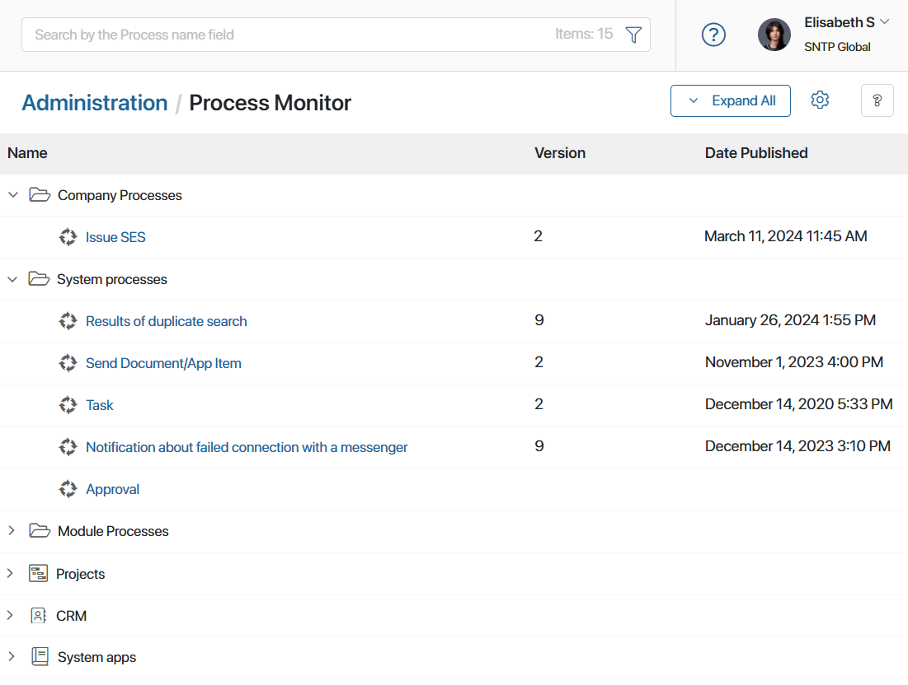
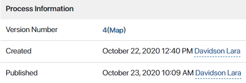
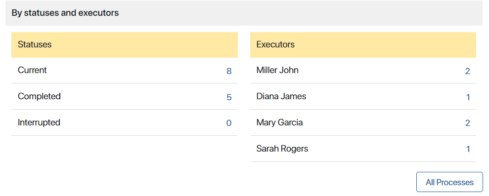
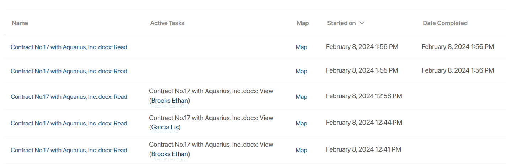
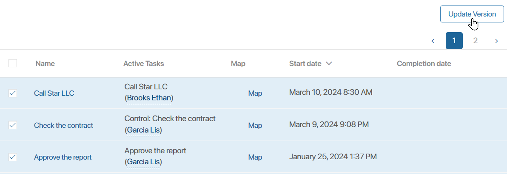

Process Monitor is an analytical tool for system administrators that helps to track processes in real time.
Using the process monitor, you can view the process statistics: how many instances are running, have been completed or interrupted, what task is currently being performed, and who is the executor. You can also bulk update the version for already running instances after publishing a new version of the process. For a specific instance, you can view the list of participants, context variables, the map, and current operations.
начало внимание
Only users included in the Administrators group have access to the process monitor.
конец внимание
To go to the monitor page, go to Administration > Process Monitor.

The monitor allows you to track the following business processes:
- System, i.e., default processes of the platform and system solutions used.
- Imported as part of workspaces, modules, and solutions, including business solutions from the BRIX Store. The exception is the processes of modules included in a paid solution, as they are not available on the monitor page.
- Created by users at the level of the company, workspaces, apps, and custom modules.
Process search
In the SaaS edition, a search bar is available on the monitor page. Enter a process name or use a filter to search for a process by main and system fields or by EQL search.
To use the search bar in the On-Premises edition, enable the enableSearchInProcessMonitor feature flag. For more information, see the Modify BRIX Enterprise parameters and Modify BRIX Standard parameters articles.
Customize folders with business processes
You can customize the layout of the process tree. To do this, use the options in the upper right corner of the page:
- Expand All. Open all folders, including nested folders.
- Click
 to proceed to the next actions:
to proceed to the next actions:
- Show workspaces in a separate folder. Combine processes across all workspaces in the Workspaces folder.
- Expand the tree when searching. This option is enabled by default. The results of the process search will be displayed in the expanded folders. In the On-Premises edition, the option is available if the search bar display flag is enabled.
- Sort in alphabetical order. This option applies to the list of nested folders and the list of processes in them.
- Hide empty folders. Hide folders, workspaces, apps, and modules that do not contain processes.
Process statistics page
To see detailed information about instances, executors, tasks, etc., open the process page by clicking on its name in the list. The data on the page is grouped into three sections:
Process information
Here you will find the version history, the map, the date when the process was created and the date when the latest version was published. By clicking on the number, you can see the comments for each version.

By statuses and performers
This section provides information about the status of all instances that have ever been run. The left column shows how many instances are currently running, and how many have been completed or interrupted.
By clicking on the counter to the right of the status, you can filter the information in the table below so that only current, completed, or interrupted instances are displayed. To reset filtering, click on All Processes.
In the Executors column, you will see a list of process participants with tasks. Click on the task counter to see all the tasks assigned to this employee in all instances of the process.

Table with a list of instances and active tasks
When you click on the name of an instance, its page opens. It contains all the necessary information: a list of tasks, deadlines, executors, context variables, the process map, as well as links to running child and parent processes. You can read more about the process page in Process instance page.
Having opened the page, you can interrupt the process. In this case, all participants of the business process will receive a corresponding notification in the #Activity stream.

Overdue tasks or incorrectly performed operations (scripts and webhooks) are highlighted in red. This allows you to quickly identify bottlenecks and take measures to eliminate the error and make the process continue.
Instances in the table can be sorted by name, start date, and completion date. To do this, click on the name of the column. To reverse the sort order, click on the arrows next to the name.
Using the search bar, you can find a process instance by its name. You can also apply a filter on main and system fields or use EQL search. Please note that you need to enable the feature flag to display the search bar in the On-Premises edition.
Bulk update process versions
After publishing a new process version, you can update already running instances so that they continue with the latest changes. To do this:
- In the list of process instances, check the instances for which you want to update the version. You can select all instances on the page or all instances that have ever run by checking the box next to the Name column and selecting the desired option.
- To the right above the table, click the Update Version button.

- If you selected all existing instances, confirm the action by clicking Update All in the opened window. If you have selected particular instances, you can update or uncheck these instances using the Update and Skip buttons. To update the version for all instances in the list, in the lower-left corner of the window, click Update All.
After the update, the latest changes will be made to the instance map and the process will continue according to the current flowchart.